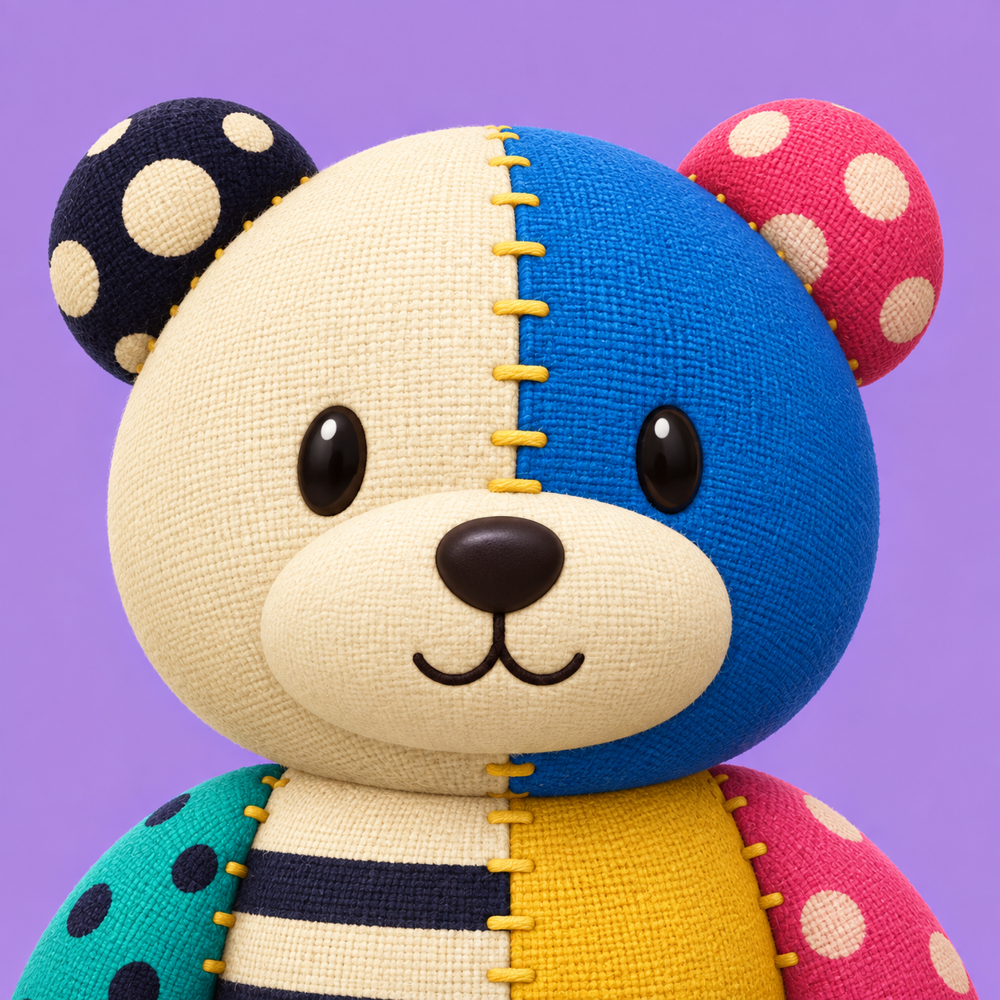

<!doctype html>
<html lang="ja">
<meta charset="utf-8">
<meta name="viewport" content="width=device-width,initial-scale=1">
<title>パッチワークのくまさん — アイコン確認</title>
<style>
*{box-sizing:border-box}body{margin:0;background:#f7f2e8;color:#292338;font:16px/1.7 system-ui,sans-serif}main{max-width:980px;margin:auto;padding:44px 30px}h1{font-size:26px;margin:0 0 8px}p{margin:0 0 28px;color:#686170}.grid{display:grid;grid-template-columns:minmax(0,1fr) minmax(260px,.9fr);gap:40px;align-items:center}.master{display:block;width:100%;height:auto}.sizes{display:flex;gap:24px;align-items:center;flex-wrap:wrap}.sizes figure{margin:0;text-align:center}.sizes img{display:block;border-radius:22%;box-shadow:0 3px 8px #29233818}.sizes figcaption{font-size:13px;color:#686170;margin-top:12px}a{color:#4e3f90}footer{font-size:13px;margin-top:32px;color:#686170}@media(max-width:680px){.grid{grid-template-columns:1fr}main{padding:24px}h1{font-size:23px}}
</style>
<main>
<h1>パッチワークのくまさん</h1>
<p>クリームと青の顔、水玉の丸耳、手縫いのぬくもり。</p>
<div class="grid">

<div><div class="sizes">
<figure><figcaption>180 px</figcaption></figure>
<figure><figcaption>64 px</figcaption></figure>
<figure><figcaption>32 px</figcaption></figure>
</div><footer>小さい表示には画面上で角丸を当てています。元画像は背景つきの正方形です。<br><a href="master.png">元画像 PNG</a> · <a href="prompt.txt">生成プロンプト</a></footer></div>
</div>
<footer>patchwork-bear-icon-v1 · 新規アイコン素材。アプリへの差し替え・公開前。</footer>
</main>
</html>
